维度二：现代转译 Modern Translation
进行美学教育与输出，消除宗教珠宝“土、沉重、搭配难”的刻板印象，降低用户购买决策门槛。
竞品空白
念珠、手串、天珠等传统宗教类饰物设计的宗教意味太强，宗教元素突出，严肃沉重，与现代审美脱节，难以融入都市日常生活与穿搭使用场景。以各类木头、水晶为原材料的能量首饰，设计往往过于粗放，审美与品牌价值低，且使用者往往被打上“迷信/玄学”标签，使高端客群望而却步。Bijala承载坛城沙的真实祝福，通过独有的转动仪式，让用户感觉更稳、更顺、更自信强大，抢占“personal ground”这一心里锚点，同时利用现代设计工艺技巧，将Sand Mandala东方宗教哲学转译为现代审美设计，打破现有市场“高级感or祝福/意义”的结构性取舍，使高级珠宝轻松融入日常穿搭，解决用户的搭配难题。以“易搭配+真祝福”降低用户购买决策门槛。
M1 产品细节
从“无形真实祝福”到“有形高级设计”。全方位展示Bijala吊坠的结构、内部封存的沙粒细节，以及现代设计。用产品细节大图证明Bijala不是普通饰品，也不是宗教符号，而是承载坛城彩沙祝福，同时拥有现代审美设计的纽约高端珠宝品牌。
核心目标：呈现吊坠沙石（real blessing）与现代设计细节（real beauty）
内容结构一（Reels）
- 主要元素与画面场景：以珠宝剪影为取景框，利用吊坠的意向承载高原风光，展现圣洁、美好、流动的高原风景，在呈现产品形态的同时，体现Bijala珠宝神圣的文化起源与审美意境。
- 颜色风格：色调轻盈、柔和、明亮，以白黄绿蓝等象征生机的浅色亮色为主
| Jo Malone | Bijala |
|---|---|

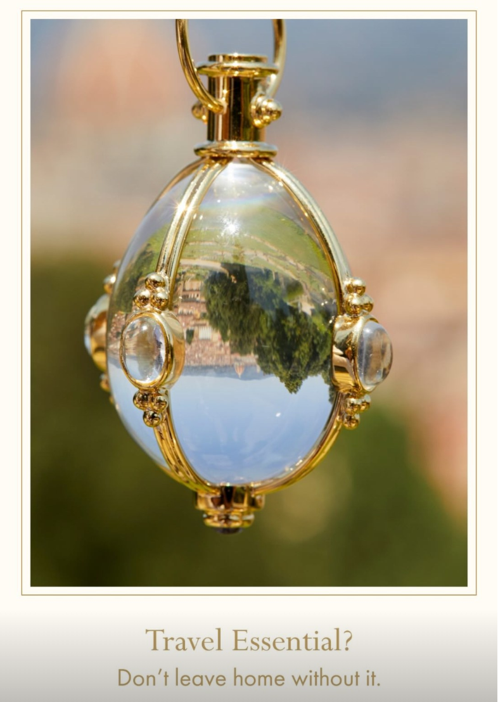 |
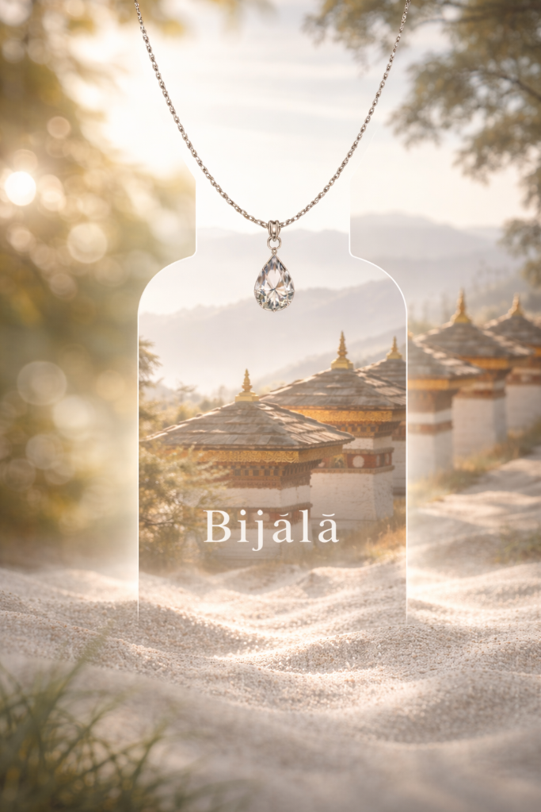 |
内容结构二（Carousal）
- 画面内容：融合利用AI/影棚布景，制作产品细节图。以背景、画面点缀元素体现藏区文化基因的同时，画面中心突出Bijala珠宝的现代设计。
- 颜色风格：以Bijala品牌标志色为主线，色彩符号鲜明。画面多采用砖红、暖黄、墨绿等暖色调，契合藏区文化基因，整体视觉风格与画面质感简约现代且典雅。
背景元素：
- 巧用沙石。将沙石意向与bijala珠宝牢牢绑定，制造一种“源头与成果”并存、“从高原到现代”的视觉冲击。拍摄时可以将五色原沙撒在吊坠周围，或是摆放承载白沙的容器。
- 高原文化/自然意向布景。可多采用粗颗粒的白砂/晶石、铜钵、藏纸、羊毛毯、格桑花、松枝为布景和画面点缀。通过原始天然、源于藏区文化的背景材质衬托Bijala始于五千米高原的文化出身。
- 强调光影流动。利用转经筒、经幡风马旗、酥油灯、柔光纱、柔光灯、丝绸等器具来制造光影效果，体现朦胧神圣美好的氛围与Bijala承载的能量流动之感。
| Qeelin | Bijala（根据产品渲染图修改） |
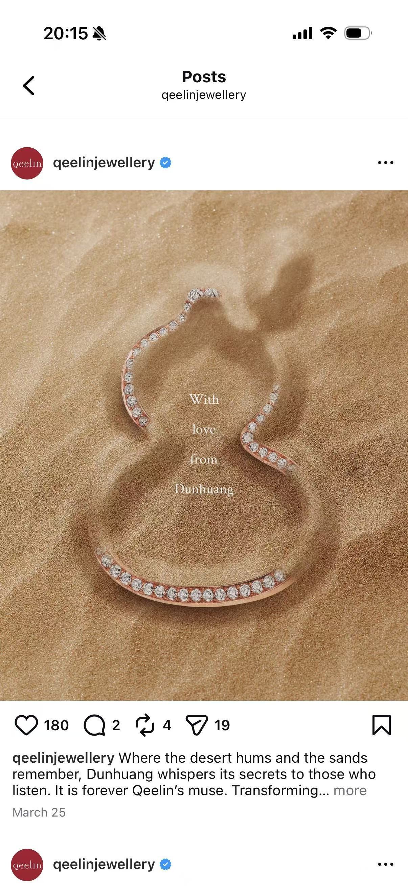 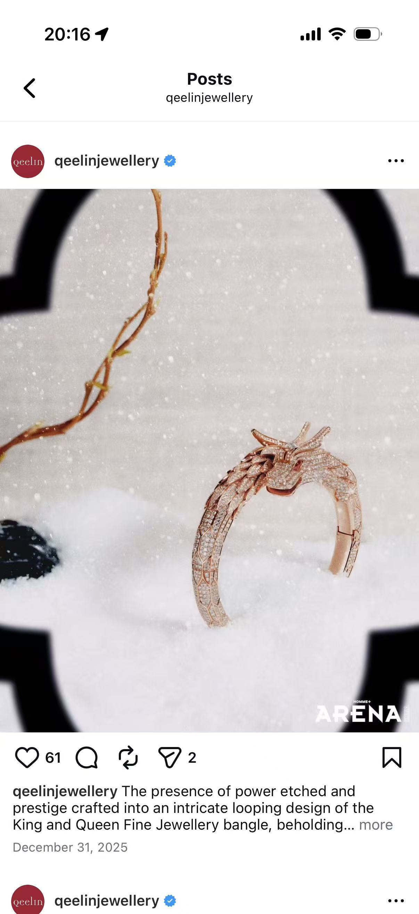 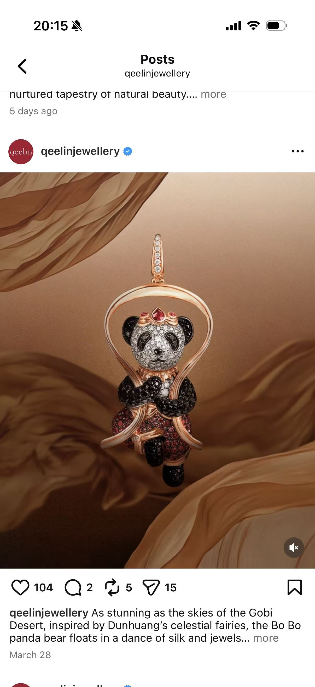 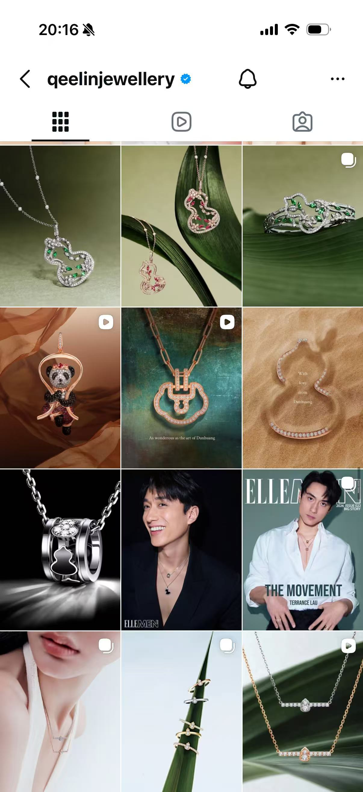 |
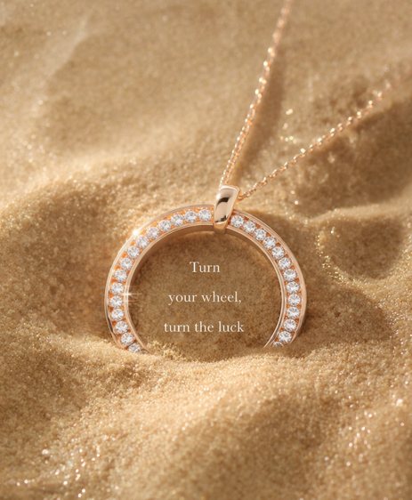 |
|---|
M2 搭配教学
不仅“真实”，更加“审美兼容”。围绕Bijala珠宝的上身效果，以及与其他首饰的叠穿搭配效果展开，体现Bijala作为东方哲学珠宝的现代审美兼容性。百搭、极简、利落、高级，没有穿搭与风格门槛，降低核心客群的购买决策难度——你不需要特意搭配，Bijala能完美融入你的首饰柜。
- 场景内容：模特采用【老-中-青】三代女性，捕捉Bijala首饰融入消费者日常穿搭的画面，通过建立“东方禅意+现代优雅”的生活方式与审美情趣的标准，吸引具有相同审美的客群。展示场景聚焦核心礼赠人群的日常穿搭、使用场景，将产品植入生活场景以弱化“带货感”，建立优雅、高级、简洁的视觉印象。
- 画面元素：聚焦模特的手、颈、胸口、锁骨等部位而非面部，模特简约穿搭，材质高级（棉麻、真丝、羊毛）。背景以自然化/生活化场景为主，避免刻意棚拍场景，利用柔和自然光的层次丰富、过渡自然的明暗对比，增加画面的立体感和电影感。
- 情绪：模特动作自然放松，呈现真实佩戴状态，塑造松弛、优雅的日常高级感，体现自信从容的气场状态，以“日常感、亲和感”拉近与消费者的距离。
- 颜色风格：根据Bijala吊坠的沙砾颜色，锚定画面主色调，将彩砂五色打造为鲜明、可一眼识别的色彩符号。模特服饰呼应吊坠沙粒的品牌色，同色系或低饱和撞色，让Bijala珠宝成为画面唯一高光。
视觉参考
|
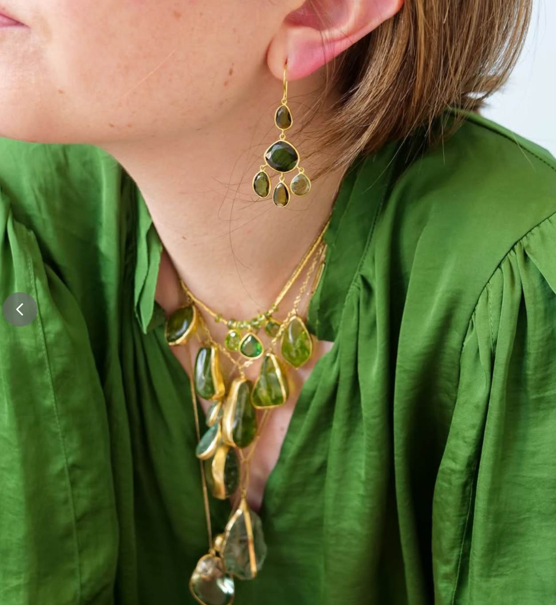 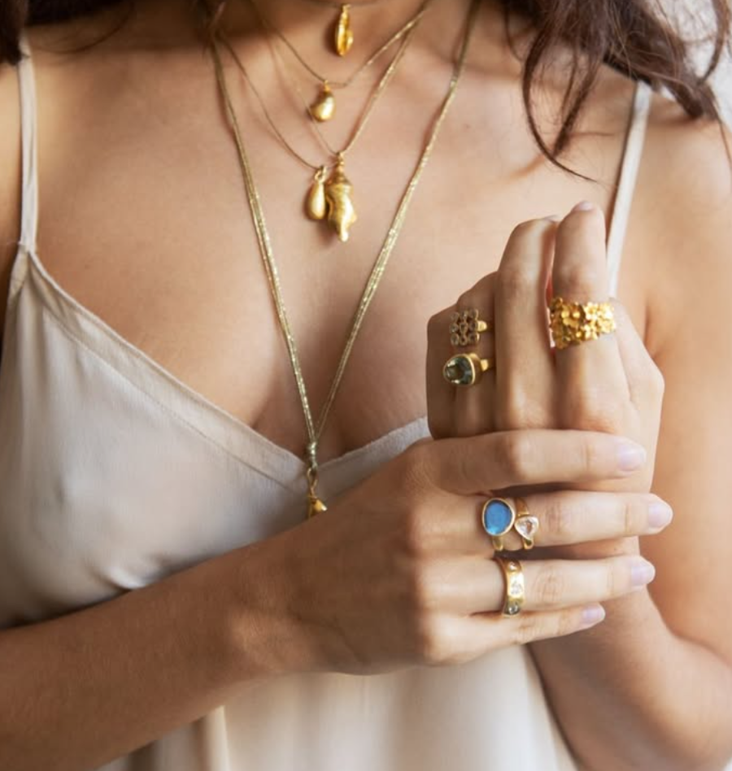 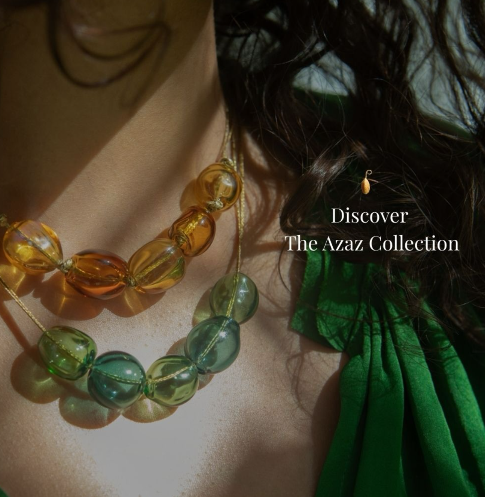 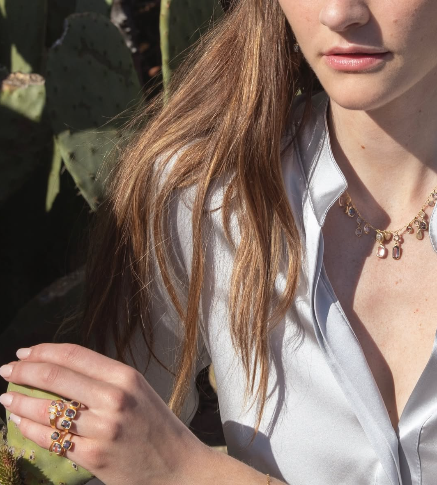 |
脚本示例（Reels）
结构【4s用户场景+5s珠宝细节展示】
- 全景：模特脖颈间佩戴Bijala吊坠，手轻持咖啡杯，递至嘴边，光影随手部动作轻轻流转。（2s）
- 特写：手部特写，镜头跟随手部向侧方移动，露出脖间佩戴的珠宝细节。（2s）
- 中景：镜头聚焦模特侧颈与肩膀，捕捉模特手部轻抬，触摸颈部的项链的动作。以伦勃朗光，突出皮肤质感与珠宝光泽。（1s）
- 特写：手指捏住吊坠两端项链并抻开，展示吊坠正反面细节。微距镜头精准锁定在吊坠。（2s）
- 近景：聚焦模特锁骨处项链，呈现Bijala吊坠之美，品牌logo和core message浮现（2s）
M3 转动仪式
Turn the Wheel，Turn Your Luck，这不是玄学，而是个人最易执行的赋能仪式。反复刻画不同人群下意识抚摸吊坠的动作——Bijala独有的“视觉锤”，强化Spiritual Jewelry的定位。Bijala不是千篇一律、符号化、缺少灵魂的普通高珠，而是携带了真实祝福，在每次触摸、旋转吊坠中，能给用户提供情绪价值与精神支撑的首饰。Bijala不仅美，更承载了真实的庇护与赐福。
- 场景内容：着重展示在不同生活场景下，手部轻触抚摸吊坠这一“视觉锤”，强调佩戴Bijala珠宝给用户带来的心理慰藉。模特采用【老-中-青】三代女性，拍摄制作上可以和M2的场景一脉相承，通过剪辑实现素材复用。
- 画面元素：以核心目标群体的生活化场景为主，刻画整体场景而非身体佩戴细节局部（区别于M2）。模特动作松弛大方，优雅干练。
- 情绪：体现自信从容的气场状态，传达出佩戴Bijala使自己更为grounded、empowered之感，强化Bijala Spiritual Jewelry的用户心智。
- 颜色风格：柔和通透，低饱和度的大地色系，平和、温暖、包容，激发“被托举”的安定感与力量感。以及浅蓝、浅绿色系，纯净、通透，彰显理性，传达冷静、从容、克制的视觉感受。
脚本示例
① 结构一：【3s用户场景+3s视觉锤画面】
- 全景：站在会议室门前，模特手捧着汇报，材料深呼吸，面容略带焦虑。（2s）
- 特写：模特右手食指与大拇指自然地捏住Bijala吊坠，指尖在吊坠边缘轻缓摩挲，吊坠在指尖发力下轻微旋转。（2s）
- 特写：模特垂眸，目光落在指尖拨弄的吊坠上，神情平和，镜头聚焦嘴角轻轻微笑的弧度。（1s）
- 中景：模特自信坚定地推开会议室大门，走入
- 近景：画面虚焦，品牌logo和core message浮现（2s）
② 结构二：【5s上下分屏-场景对比】
- 上半部分是Bijala的青藏素材
- 下半部分是AI生成的用户日常佩戴场景。
- 最后蒙太奇上拉，用户场景全屏。
- 纯黑底 + 品牌logo和slogan
| Foundrae、sophieratner_jewelry |
|---|
|
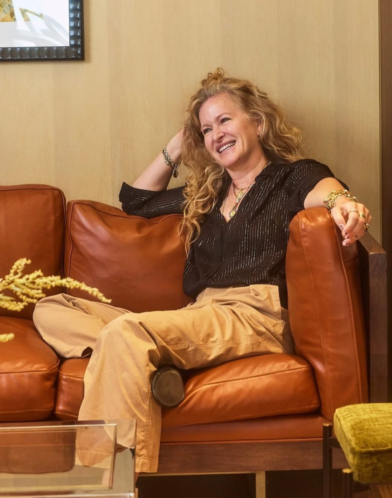 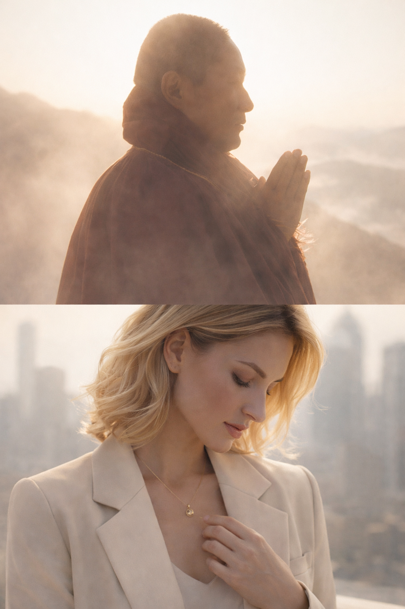 |
维度三：礼赠时刻 Meaningful Gift
刻画送礼场景，可视化Bijala的佩戴效果“爱与祝福的传承闭环”，激发共鸣，实现购买转化
G1 自我礼赠
面向25-40岁，初入职场或正力争上游的职场精英女性，状态管理极其重要，需要一个可重复触达的心理锚点，重获内心的力量、自信与平静。在关键场景中，展现她们佩戴bijala吊坠与无意识抚摸吊坠的动作，游刃有余、容光焕发、自信强大的领导者状态
核心场景：
- 职场：重大面试/商务谈判签约/关键汇报/核心会议/咖啡馆办公
- 社交：名流晚宴/午后茶歇/看展交流
- 生活：约会/精英运动/长途飞行/独处悦己
G2 异地伴侣
远距离情感中，她们需要需要一份礼物表达自己对方无言的爱恋、挂怀与思念。bijala承载着真实祝福，不仅让对方的生活更顺更稳，每次触摸吊坠更是一次思念的共振——吊坠中的沙来自同一份土地，你们共享通一份祝福。从青藏到纽约，这份白沙的祝福穿越了半球；现在由你再次赠出，替你传达逾山越海的心意，生生不息，永远流动，绵延无尽。
核心场景：
- 分别：机场 / 火车站
- 日常相处碎片：居家休闲 / 外出约会
- 重逢：奔赴彼此的赶路途中 / 机场车站见面
G3 守护家人
总有些她们无法时刻在场、守护所爱的时候，无法亲身参与家人的高光时刻，或是陪伴他们度过低谷时期，她需要的不仅是一件贵重的首饰来表达爱与在乎，而是更需要一份需要承载祝福与庇护的礼物替她们陪伴、见证，而bijala吊坠的每一次抚摸与转动，都是一次轻柔但坚定地提醒“我在”。
核心场景：
- 高光时刻：孩子第一次表演/演讲/比赛、关键考试、毕业升学、独立出行
- 需要陪伴：孩子生病、父母体检手术
- 日常守护：老年人散步、翻看相册、养护花草
- 场景内容：叙事主线为【将属于我的Bijala祝福庇佑，传递给父母、孩子、爱人、朋友，让他们也感觉到被支撑被关爱】。利用跨代际叙事讲述祝福的代际传承，以爱的闭环强化Meaningful Gift的定位。不将镜头直接对准珠宝，而是让珠宝在人物的身体接触中自然出现，交谈、耳语、拥抱、亲吻、牵手、抚摸，将Bijala珠宝作为用户情感的物理延伸。以情感化叙事，激发用户的购买冲动——我想要把这份祝福语与庇护立刻传递给我爱的人。人物年龄带涵盖老-中-青。一个场景主题下的长视频可以多次剪辑复用。
- 画面元素：在G1-G3核心目标群体的关键场景下，呈现整体场景、故事主线。同时在其间插入身体佩戴细节切片镜头与轻触抚摸吊坠这一“视觉锤”，体现Bijala带给佩戴者的心理慰藉。Bijala珠宝随动作自然呈现，如拥抱时锁骨处项链晃动微光，耳语时手指虚拢胸口项链，为对方佩戴时手部扣链动作等等。
- 情绪：在轻触抚摸吊坠这一动作应展现出情绪从焦虑紧张到从容自信的转化。人物互动中饱含真挚爱意，传递出深层感情链接的美好愉悦，激发用户共鸣
- 颜色风格：柔和通透的大地色系，营造温暖、温馨的氛围。配合砖红、深蓝、墨绿等高饱和色系，强化珠宝的贵气感的同时传递安定感与力量感
视觉参考
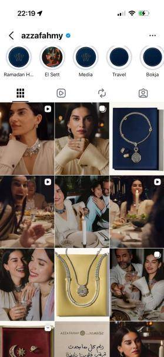
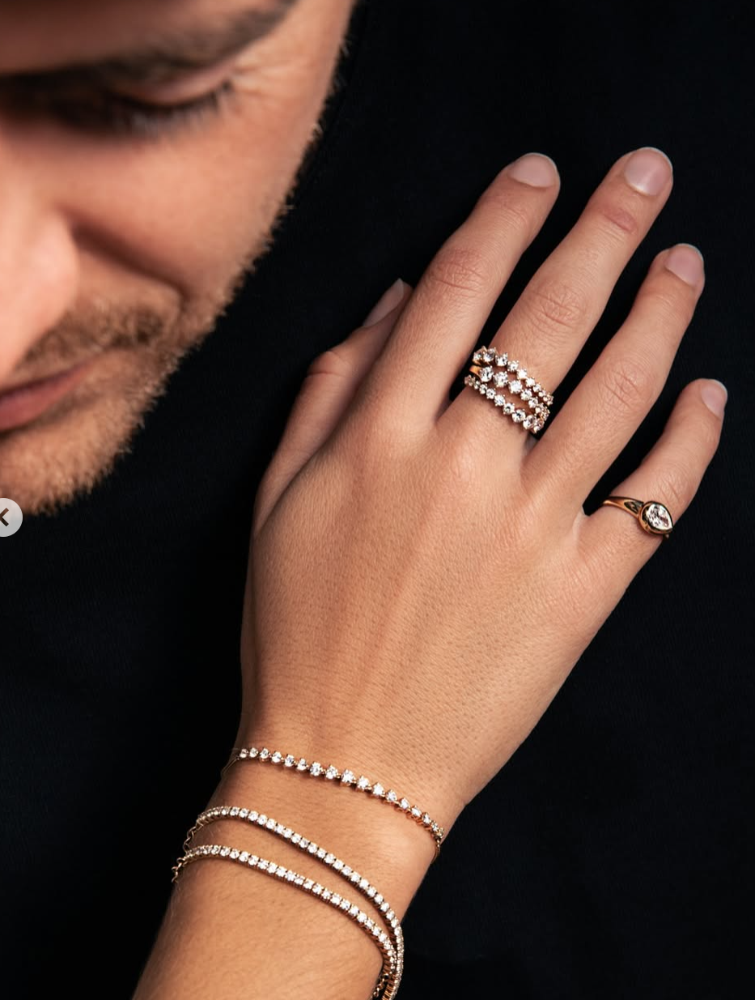
Content Strategy Summary
文化起源 · 坛城仪式 / 寺庙僧侣 / 高原剪影
现代转译 · 产品细节 / 搭配教学 / 转动仪式
礼赠时刻 · 自我礼赠 / 异地伴侣 / 守护家人
Turn the Wheel
Turn Your Luck
视觉锤：指尖触摸、拨动吊坠，吊坠转动的特写。
Core message
- Real Beauty, Real Blessing (产品特征：美与祝福)
- Turn the Wheel, Turn your luck (核心场景与动作)
- Don’t just get luck, get blessed (差异化)
- From roof of the world, To the palm of your hand (青藏文化根源)